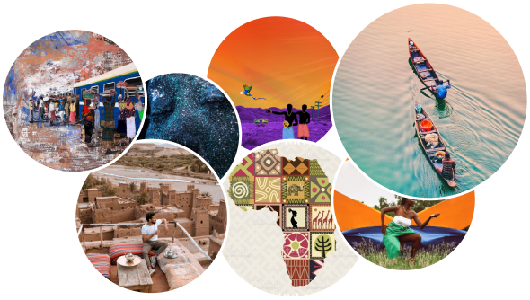

Afroseed Solutions Structure
We seed and nurture solutions for today and design the ones for tomorrow. New workflows, new languages, new tools to build a service that helps shorten distances and make the world a little smaller.
Technology Solutions
AI Training Data Services
Our native translators create solutions for all important software, databases, algorithms, and other substantial information. Our stepwise process makes us more precise while working on any of our AI localization projects worldwide, that can translate vast volumes of data in a matter of milliseconds.
Data Collection
It is one of the most necessary elements in boosting your brand. Afroseed offers end-to-end varied data collection services, to train and test all the recent AI technology, such as: Speech, Text-to-speech data, Conversational data, and Image as well as video data.
Chatbots and Conversational AI Solutions
Conversational AI Solutions and Chatbots can be your brand's “first line of defense” because they handle customer support requests, gather information, and send customers to the right place. Providing Chatbot in Different Languages with Afroseed helps you to make more sales, and get more qualified leads.
Custom AI solutions
Our in-house team of engineers and linguists are able to customize AI solutions for maximum impact across your business ecosystem and empower your organization's performance.
Machine Translation
Machine Translation with Afroseed can enable you to update and maintain your localized content more easily, as you can apply changes to the source text and generate new translations automatically, which permits your company to solve real business problems and save time and money.
MTPE
By utilizing this approach, you can get more texts translated faster and with a standardized quality level. In addition to MTPE significant advantage of saving time and money, thanks to increased cost-efficiencies and the ability to work through more text with Afroseed.
Software Localization
In addition to communicating the meaning of the source language, it's important to follow the norms and conventional expectations of software users in the relevant locale, and to ensure consistency between the translated user interface.
E-learning & training
Localizing your e-learning content with our Afroseed is a cost-effective and streamlined way to deliver your content to a much wider audience, allowing you to create one master version that can be re-used across your entire multilingual audience.
Interpreting Solutions

Over the Phone Interpretation
At Afroseed, we are a leading agency in interpreting services, as we make it possible to connect with phone interpreting professionals in seconds. Literally, all you need to do is pick up the phone and tell us what language you need translating.
Video Remote Interpretation
Our video interpreting service works by translating a piece of multilingual content into your chosen language through interpretation, via a computer with a webcam with internet connection or through various other electronic devices.
Conference Interpretation (On-site Interpretation - Remote Interpretation)
When you need an in-person interpreter to facilitate face-to-face communication or remote interpretation between signed and spoken language users, Afroseed conference interpreting services is an industry-leading solution you can count on.
Desktop Publishing & Localization Engineering
DTP
Because every language has its own structure, DTP services with Afroseed are necessary to preserve the layout of a translated document for each new target language, and adjust materials for printing or publication in required formats.
Publishing and E-publishing
Our experienced Multilingual Desktop Publishing team adapts the linguistic and cultural nuances and play with layout and design, so the publishing and E-publishing localization efforts produce materials that engage and resonate with target audiences.
File preparation
The localization process with Afroseed includes file preparation, where our translators are adapting your existing content to a local language and culture in the target market, in order to increased organization's credibility, and achieve better brand recognition.
File conversion
Translation tools do not support every file format directly. This means that certain formats have to be converted into an intermediate format, with Afroseed file conversion services, to become more accessible to users!
Source creation
Source files are critically important if you plan on translating or localizing your company's content now or at any time in the future! If you want your content to fuel your global growth — instead of holding you back — you need our source creation services, that are designed to help you scale globally.
Convert scanned PDF
Scanned PDF conversion with Afroseed increases the efficiency of our work by reducing the time & effort of manual data entry, as it can read images of texts and output them in a machine-readable format.
Convert Non-editable PDF
We convert non-editable files and prepare them for translation, adjust materials for printing or publication in required formats, control the quality of the performed layout, whether it's text, images or graphics, in order to ensure that it's an error-free and ready-to-publish.
Convert editable PDF
Afroseed linguists accept all industry standard file formats and deliver ready to print/publish files, in addition to converting editable PDFs and digitizing your content quickly and in the highest quality.
Full formatting
Where the layout of the documents needs to be, by all means, maintained. One of the localization challenges is the fact that the number of words, local diacritics, or even the writing direction vary depending on the language. Afroseed promises to cater to the formatting needs of companies from all industries
Translation & Localization Solutions
Patent Translation
Afroseed can successfully adapt your brand's content to a specific locale, taking into consideration the cultural differences of the countries you're targeting, to make it more accessible and effective with the highest level of integrity.
Intellectual Property
Afroseed can successfully adapt your brand's content to a specific locale, taking into consideration the cultural differences of the countries you're targeting, to make it more accessible and effective with the highest level of integrity.
Document Translation
Afroseed can successfully adapt your brand's content to a specific locale, taking into consideration the cultural differences of the countries you're targeting, to make it more accessible and effective with the highest level of integrity.
Editing/Revision
Afroseed can successfully adapt your brand's content to a specific locale, taking into consideration the cultural differences of the countries you're targeting, to make it more accessible and effective with the highest level of integrity.
Full TEP
Afroseed can successfully adapt your brand's content to a specific locale, taking into consideration the cultural differences of the countries you're targeting, to make it more accessible and effective with the highest level of integrity.
Quality Assurance
Afroseed can successfully adapt your brand's content to a specific locale, taking into consideration the cultural differences of the countries you're targeting, to make it more accessible and effective with the highest level of integrity.
Copy editing
Afroseed can successfully adapt your brand's content to a specific locale, taking into consideration the cultural differences of the countries you're targeting, to make it more accessible and effective with the highest level of integrity.
Proofreading
Afroseed can successfully adapt your brand's content to a specific locale, taking into consideration the cultural differences of the countries you're targeting, to make it more accessible and effective with the highest level of integrity.

Multimedia Solutions
Voice-over
We give you the chance to create professional-sounding audio to help make your next video accessible to your global customers. Take advantage of our voice over services to communicate your brand to new and existing customers in a unique way.
Transcription
If you need your transcript in multiple languages, we will apply the same high-quality transcription services procedures that we use for all translation work, such as creating a glossary of approved terms, following brand guidelines and developing a style guide to ensure consistency across all language versions.
Dubbing
Dubbing services with Afroseed ensure that essential aspects such as tone of voice, gender, pauses, and conversations remain natural to the ear. We also remain faithful and accurate to the original context, while making an effort to translate those parts which may result foreign to local ears.
Subtitling / Captioning
Our subtitling services give you everything you need to communicate with your international audience while retaining the accuracy and authenticity of the spoken text. Subtitling is an effective way to make your message more accessible using multilingual content.
Transcreation
Afroseed Transcreation service adapts the message and keeps it relevant to your target audience, to help maintain your brand identity in each market. It is a freer and much more creative approach to traditional translation.
Gaming Solutions
With the localization of the game, the gamer will feel that the game is designed for them! Creating localized versions for your game means working to ensure that the other, non-text-based elements of the game all suit the local region for which it is destined, to gain larger market-share in the long runThe most important aspects of gaming localization process include: Translation, Editing, Proofreading, Integration, Regional adaptation and Linguistic quality assurance.